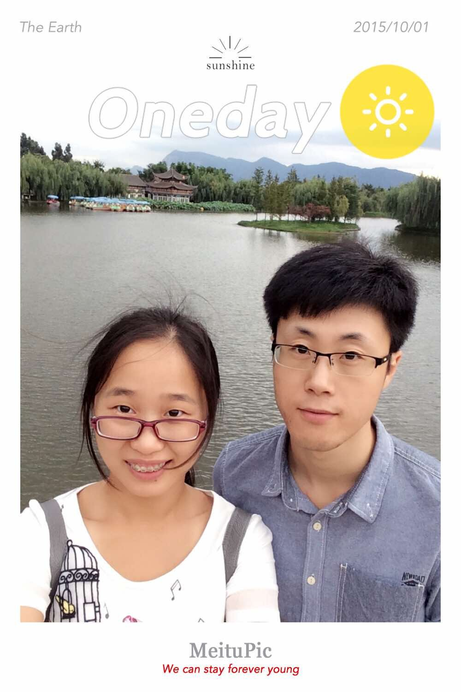
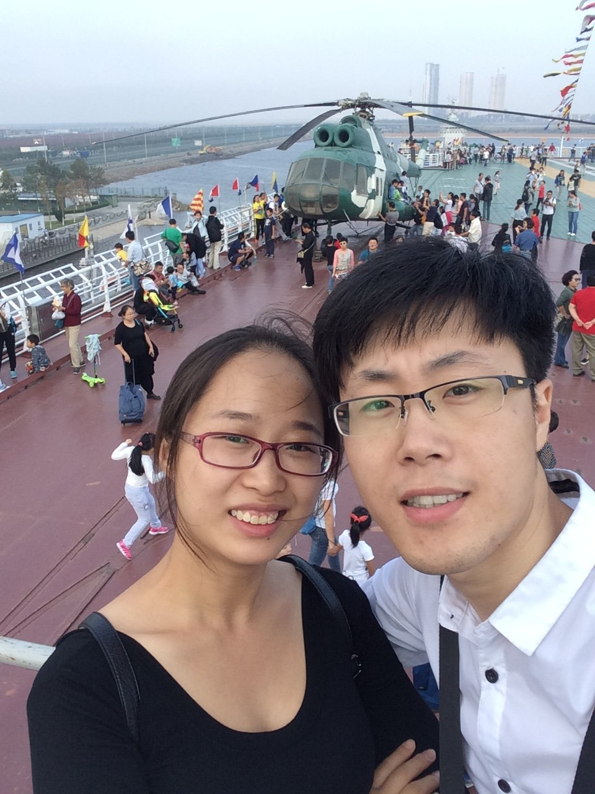
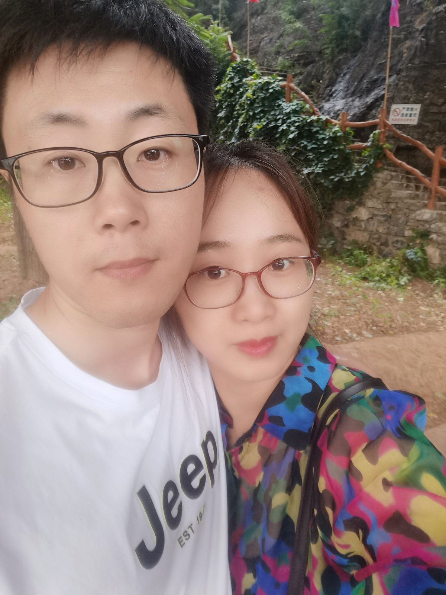

亲爱的安蒙宝贝，
十年了。
这封信我想了很久，该怎么写。
想来想去，还是决定像平时说话那样，慢慢讲给你听。
2016 . 10 . 21
photos/01.jpg
十年前的今天，我们成了一家人。
那天的很多细节我已经记不清了，
可有一种感觉一直没变：
往后的日子，有你在身边，
我心里是踏实的。
这十年，
我们走的并不都是平路。
换过城市，折腾过事业，
也有过让人睡不着的夜晚。
可是每一次回过头，
你都在。

photos/02.jpg
真正让我舍不得的，
反而是那些普通的日子。
一起吃饭，一起安静，
一起为一点小事笑起来。
那些没有被拍下来的瞬间，
才是我们十年真正的样子。

photos/03.jpg

photos/04.jpg
那时候的我们，眼里都是青涩。
现在的我们，多了几分从容。
模样慢慢变了，
没变的，是靠在一起的那个姿势。
谢谢你。
谢谢你，在我没什么底气的时候，
没有催我，
也没有让我觉得自己不够好。
谢谢你，容忍我总是在忙，总在想下一步，
却还肯陪我把日子过得像日子。
往后，我没有什么大的承诺。
只想继续这样：
每天的思念，隔着距离也不落下，
每个周末回家，有你在等我，
遇到事情，第一个想到的还是你。
十周年快乐，
亲爱的安蒙宝贝。
永远爱你的 闫帅
2026 . 10 . 21
与你相伴的第 3653 天